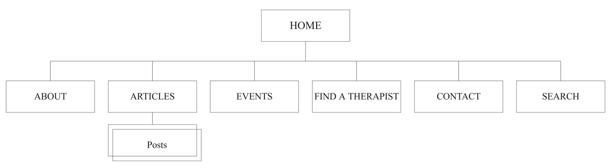
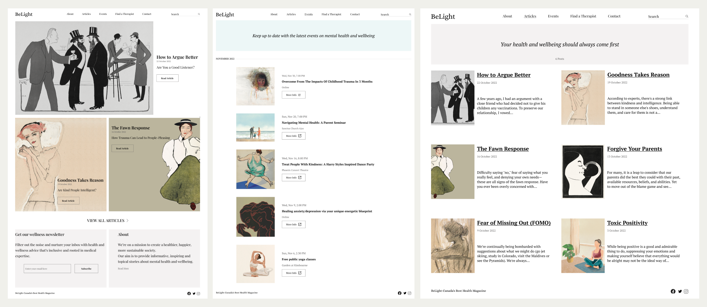

BeLight
Project Overview
As we grow up, some of us must deal with new mental disorders, such as fear of missing out or how trauma can lead to people-pleasing. Dealing with these issues often takes time and energy because we may not have enough knowledge or information to face them.
My idea was to design an online magazine, including short and new scientific articles, that tries to raise awareness about current mental health issues arising from living in the modern world.
BeLight website leads to a better understanding of ourselves and the people around us.
Role Research, UX, UI, Programming
Time8 weeks
Design Process
Research
I began the process by conducting primary and secondary research to find mental illness topics more relevant to today's society. To gather my initial information, I reviewed academic and scientific research studies.
Sitemap
With my research findings in mind, I started to structure the content on BeLight's website in a way that aligned with the project goals. My aim was to create a site that effectively conveyed BeLight's mission and values and offered a seamless and user-friendly experience for visitors. To achieve this, I meticulously categorized and organized the information, keeping usability, usefulness, and user-friendliness at the forefront.
A sitemap was also created to provide a clear visual representation of the site's layout and content, serving as a roadmap for the design and development process. By implementing these strategies, I aimed to build a website that was functional, effective, intuitive, and accessible to all users.

Wireframes
Once I had completed the low-fidelity wireframes, I moved on to the UI design phase, where I created high-fidelity wireframes that brought the vision for the website to life. I paid meticulous attention to detail, carefully considering typography, color, and imagery to create a cohesive and visually appealing design.
The photo attached below showcases the final design of several pages of the BeLight website.

Develop
I began programming with HTML and CSS after prototyping. With HTML, I could structure the website's content, and with CSS, I could apply styles and create the desired visual appearance. I look forward to continuing to hone my skills in these technologies, as they will play a crucial role in the success of any future web development projects.
VIEW SITENext Steps
Design is never truly complete, and as I strive to stay ahead of the game, my focus now shifts to ensuring that BeLight is a fully responsive website. Responsiveness is an essential aspect of modern web design, as it allows a website to adjust seamlessly to any device or screen size, providing an optimal user experience.
By implementing this key feature, I aim to enhance the user experience and broaden BeLight's reach to a wider audience. I am eager to put my skills to the test and bring this important aspect of web design to life to enhance the website's overall design and functionality.